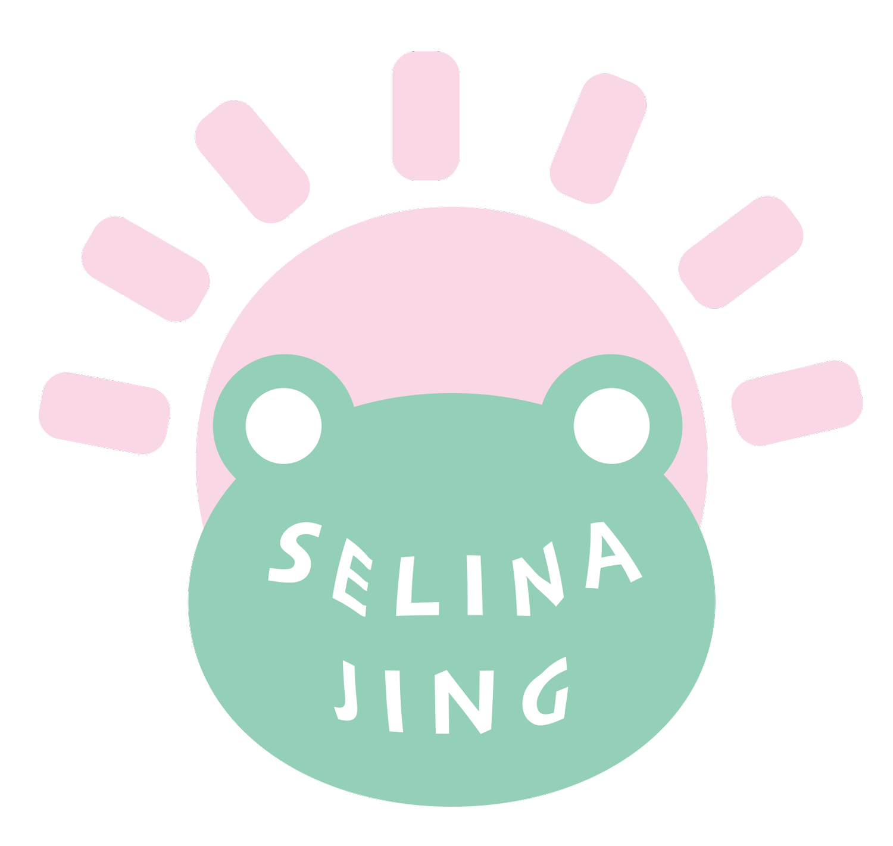

Hello, my name is Xinyuan, and I have a background in illustration and a strong interest in interactive design. I enjoy creating projects that allow users to actively engage with my work, as I believe interaction is key to building meaningful connections between users and design. My current focus is on blending technology with philosophical ideas to create immersive experiences that provoke thought and reflection. Through my projects, I aim to explore complex themes, such as determinism and fate, while experimenting with innovative tools like TouchDesigner and Mediapipe. I’m always eager to learn, experiment, and push creative boundaries in the intersection of art, design, and technology.
Welcome to my CC Lab Portfolio! This website showcases the creative projects I've developed as part of the Computational Creativity Lab, where technology meets artistic expression. Each project explores innovative ways to blend coding, design, and storytelling, reflecting my journey of growth and experimentation.
